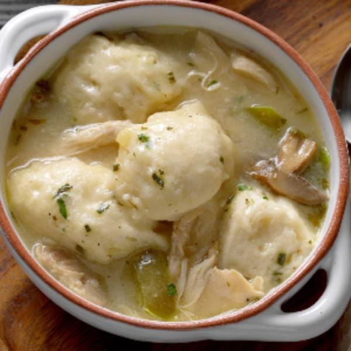

Easy Chicken and Dumplings

Description:
A super easy way to make chicken and dumplings.
Ingredients:
- 1 (32 ounce) container chicken broth
- 4 skinless, boneless chicken breast halves, cubed, or more as needed
- 1 onion, chopped
- ½ (16 ounce) package baby carrots
- 2 stalks celery, chopped
- 1 bay leaf
- salt and ground black pepper to taste
- 2 ¼ cups baking mix (such as Bisquick ®)
- ⅔ cup milk
Steps:
- Combine chicken broth, chicken breast cubes, onion, carrots, celery, bay leaf, salt, and pepper in a large pot; bring to a boil. Reduce heat, cover pot, and simmer until chicken is no longer pink in the center and the vegetables are tender, 20 to 25 minutes.
- Mix baking mix and milk in a bowl until dough is sticky; drop golf ball-sized pieces of dough into the soup. Cover pot and cook until dumplings are cooked through, about 10 minutes.